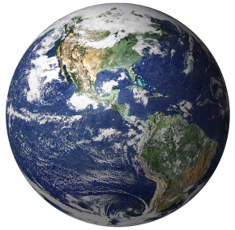
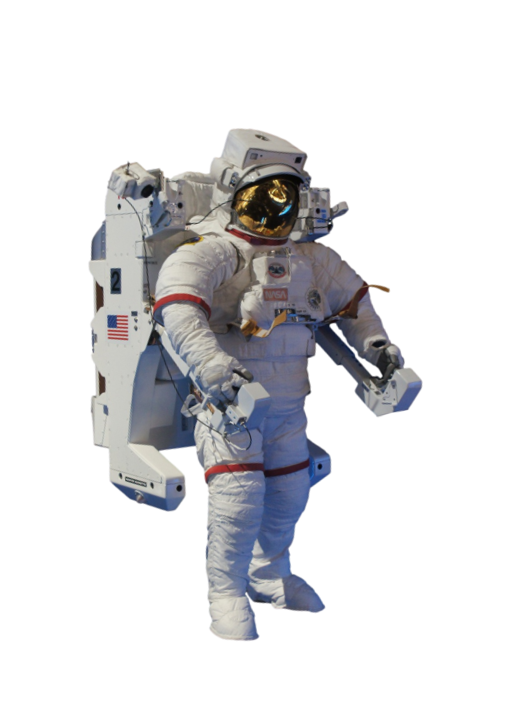
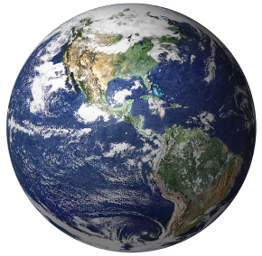
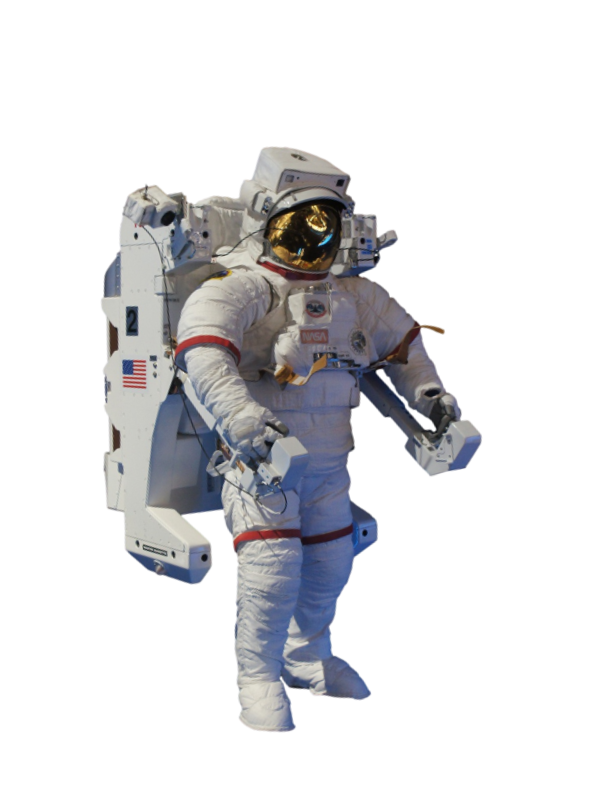

Spaceships are vessels designed for travel and operations in outer
space. They serve various purposes such as exploration, scientific
research, satellite deployment, and human transportation. Equipped
with advanced propulsion, navigation, and life support systems,
spaceships enable us to explore the cosmos and unlock its mysteries.
Astronomers sometimes divide the Solar System structure into
separate regions. The
inner Solar System includes the Mercury, Venus, Earth, Mars and bodies in the
asteroid belt. The
outer Solar System includes the Jupiter, Saturn, Uranus, Neptune and bodies in the
Kuiper belt.
[5] Since the discovery of the Kuiper belt, the outermost parts of
the Solar System are considered a distinct region consisting of
the objects beyond Neptune.
[6]
Formation and evolution
The Solar System formed 4.568 billion years ago from the
gravitational collapse of a region within a large
molecular cloud.
[f] This initial cloud was likely several light-years across and
probably birthed several stars.
[8] As is typical of molecular clouds, this one consisted mostly of
hydrogen, with some helium, and small amounts of heavier elements
fused by previous generations of stars.
The Sun is the Solar System's star and by far its most massive
component. Its large mass (332,900
Earth masses),which comprises 99.86% of all the mass in the Solar
System,produces temperatures and densities in its
core high enough to sustain nuclear fusion of hydrogen into helium.
Inner Solar System
The inner Solar System is the region comprising the
terrestrial planets and the
asteroid belt. Composed mainly of
silicates and metals,the objects of the inner Solar System are relatively
close to the Sun; the radius of this entire region is less than the
distance between the orbits of Jupiter and Saturn. This region is
also within the
frost line, which is a little less than 5 AU (750 million km; 460 million mi)
from the Sun.
Outer Solar System
The outer region of the Solar System is home to the
giant planets and their large moons. The
centaurs and many
short-period comets also orbit in this region. Due to their greater distance from the
Sun, the solid objects in the outer Solar System contain a higher
proportion of volatiles, such as water, ammonia, and methane than
those of the inner Solar System because the lower temperatures allow
these compounds to remain solid, without significant rates of
sublimation.
[13]
Outer planets
Centaurs
The four outer planets, also called giant planets or Jovian
planets, collectively make up 99% of the mass known to orbit the
Sun.
[h] Jupiter and Saturn are together more than 400 times the mass of
Earth and consist overwhelmingly of the gases hydrogen and helium,
hence their designation as
gas giants.
The centaurs are icy comet-like bodies whose
semi-major axes is greater than Jupiter's and less than Neptune's (between 5.5–30
AU). These are former Kuiper belt and scattered disc objects that
were gravitationally
perturbed closer to the Sun by the outer planets, and are expected to become
comets or get ejected out of the Solar System.


 


